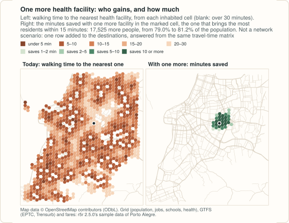
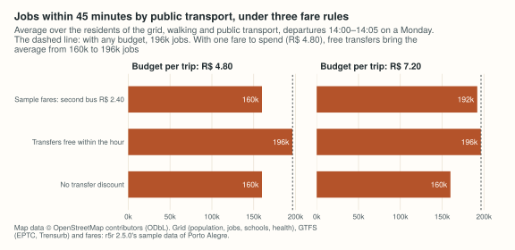

Example: before and after in Porto Alegre
Source:vignettes/articles/scenarios-porto-alegre.Rmd
scenarios-porto-alegre.RmdA transport plan is a list of changes: a cycle path here, a lane
taken from cars there, a new clinic, a fare rule. Each one asks the same
question twice, before and after. In peabiru the street network is built
once, and the changes, called scenarios, are arguments of each
routing call: new_lts changes the level of traffic stress
cyclists meet on chosen streets, new_carspeeds and
carspeed_scale change car speeds by street or by area, and
a fare structure is a list of tables that can be edited before the call.
A new school or clinic is not even a change to the network: it is one
more row among the destinations.
This example asks four such questions of Porto Alegre, on a small sample of the city, and times each one: a what-if is one routing call on the network as built, with nothing to edit and rebuild. It was computed on 2026-11-12 with peabiru 0.1.0; the output shown is what the code printed. The same steps in Python are in the Python example.
The data
| Data | Source | Licence |
|---|---|---|
| Streets | OpenStreetMap extract of Porto Alegre in the sample data
(poa_osm.pbf) |
ODbL 1.0, © OpenStreetMap contributors |
| Public transport | The EPTC bus and Trensurb train GTFS feeds of the sample
(poa_eptc.zip, poa_trensurb.zip), cut for it:
the buses run from 11:20 to 17:50 only, so the analyses below leave at
14:00 on Monday 13 May 2019 |
as distributed (see below) |
| Grid |
poa_hexgrid.csv: 1,227 H3 cells (resolution 9) with
population, jobs, schools and health facilities; its sources are not
documented |
as distributed (see below) |
| Fares |
fares/fares_poa.zip, the fare structure of the
sample |
as distributed (see below) |
All files are the Porto Alegre sample data of the r5r project, from
its repository at the tag of version 2.5.0 (the url in the
code below), where they are distributed under the licence line
GPL (>= 3) | MIT + file LICENSE. The sample also has an
elevation raster, left out here: a call with a scenario routes without
slope costs (with a warning), so the before and the after would not be
comparable.
library(peabiru)
library(sf)
data_dir <- file.path(Sys.getenv("PEABIRU_EXAMPLE_DATA", "example-data"), "poa")
url <- "https://raw.githubusercontent.com/ipea/r5r/v2.5.0/r-package/inst/extdata/poa/"
dir.create(file.path(data_dir, "network"), recursive = TRUE, showWarnings = FALSE)
dir.create(file.path(data_dir, "fares"), showWarnings = FALSE)
for (f in c("poa_osm.pbf", "poa_eptc.zip", "poa_trensurb.zip", "poa_hexgrid.csv",
"fares/fares_poa.zip")) {
dest <- file.path(data_dir, f)
if (!file.exists(dest)) download.file(paste0(url, f), dest, mode = "wb", quiet = TRUE)
}
for (f in c("poa_osm.pbf", "poa_eptc.zip", "poa_trensurb.zip")) {
if (!file.exists(file.path(data_dir, "network", f))) file.copy(file.path(data_dir, f), file.path(data_dir, "network"))
}
threads <- 4 # of this laptop's ten cores
build_time <- system.time(network <- build_network(file.path(data_dir, "network"),
n_threads = threads))[["elapsed"]]
network
#> <peabiru_network>
#> data path: example-data/poa/network
#> streets: 26,880 vertices, 66,652 edges
#> transit: 2 feed(s) (poa_trensurb, poa_eptc), 4,010 stops, 226 patterns, 118 services
#> elevation: NONE
build_time
#> [1] 1.325
grid <- read.csv(file.path(data_dir, "poa_hexgrid.csv"))
grid$jobs[is.na(grid$jobs)] <- 0 # 5 cells have no count
grid$healthcare[is.na(grid$healthcare)] <- 0
colSums(grid[, c("population", "jobs", "schools", "healthcare")])
#> population jobs schools healthcare
#> 812935 337921 194 141
# the average over the residents of the grid
per_resident <- function(value, id) weighted.mean(value, grid$population[match(id, grid$id)])
osm <- st_read(file.path(data_dir, "poa_osm.pbf"), "lines", quiet = TRUE)
ways_named <- function(name) osm[!is.na(osm$name) & osm$name == name & !is.na(osm$highway), ]Building the network takes about 1.3 seconds; every call below is
timed the same way, by system.time(), on a laptop with ten
cores, four of them used (n_threads), and other work
running, so the timings are indications.
A new cycle path
A cyclist who rides only on streets of low traffic stress (levels 1
and 2 of four, max_lts = 2, the default) walks the bicycle
on the others. In this extract Avenida Protásio Alves, the radial avenue
east of the centre, is level 4 from end to end. What if it had a
protected cycle path? The scenario gives its OpenStreetMap ways level
1:
ways <- ways_named("Avenida Protásio Alves")
path <- data.frame(osm_id = as.numeric(ways$osm_id), lts = 1L)
nrow(path)
#> [1] 94
jobs_by_bike <- function(...) {
accessibility(network, grid, grid, opportunities_colnames = "jobs",
mode = "BICYCLE", max_lts = 2, cutoffs = 20, n_threads = threads, ...)
}
t_before <- system.time(before <- jobs_by_bike())[["elapsed"]]
t_after <- system.time(after <- jobs_by_bike(new_lts = path))[["elapsed"]]
gain <- merge(before[, c("id", "accessibility")], after[, c("id", "accessibility")],
by = "id", suffixes = c("_before", "_after"))
gainers <- gain$id[gain$accessibility_after > gain$accessibility_before]
c(before = per_resident(gain$accessibility_before, gain$id),
after = per_resident(gain$accessibility_after, gain$id),
share_gaining = sum(grid$population[grid$id %in% gainers]) / sum(grid$population))
#> before after share_gaining
#> 3.006942e+04 3.107525e+04 3.117592e-01
c(call = t_before, with_scenario = t_after)
#> call with_scenario
#> 0.369 0.125The average resident reaches 30,069 jobs within 20 minutes on a low-stress bicycle ride today, and 31,075 with the path; 31% of residents gain something, all of them along the avenue and the neighbourhoods on both sides. The gain on average is small because most of the city’s jobs are in the centre, which a low-stress ride from the east does not reach in 20 minutes either way.
One ride across it, from the east end of the avenue to the Santa Casa hospital in the centre, before and after:
ends <- data.frame(id = c("Jardim Carvalho", "Santa Casa"),
lon = c(-51.1405, -51.2224), lat = c(-30.0415, -30.03043))
monday <- as.POSIXct("2019-05-13 14:00:00", tz = "America/Sao_Paulo")
ride <- function(...) {
detailed_itineraries(network, ends[1, ], ends[2, ], mode = "BICYCLE", max_lts = 2,
departure_datetime = monday, ...)
}
rides <- rbind(cbind(when = "today", ride()), cbind(when = "with the path", ride(new_lts = path)))
as.data.frame(st_drop_geometry(rides)[, c("when", "total_duration", "total_distance")])
#> when total_duration total_distance
#> 1 today 86.4 11397
#> 2 with the path 66.6 9476
The ride today is long for its 11 km because the bicycle is walked
wherever no low-stress street goes the right way; with the path, it
follows the avenue. new_lts also takes lines (an
sf of LINESTRINGs, each street taking the
level of the nearest line), which is how a planned route that is not yet
in OpenStreetMap is drawn in.
Congestion and a closed avenue
peabiru’s car speeds are free flow: the speed limit of each street,
or a default by its class, with no traffic. Two scenarios change that.
The first slows every street within 2 km of the Mercado Público, in the
centre, to half its speed (a polygon with scale = 0.5); the
second closes Avenida Ipiranga, the east–west arterial along the Dilúvio
creek, to cars (speed 0 on its ways).
centre <- st_transform(st_sfc(st_point(c(-51.22781, -30.02756)), crs = 4326), 31982)
slow_centre <- st_sf(poly_id = "centre", scale = 0.5, priority = 1L,
geometry = st_transform(st_buffer(centre, 2000, nQuadSegs = 16), 4326))
ipiranga <- ways_named("Avenida Ipiranga")
closed <- data.frame(osm_id = as.numeric(ipiranga$osm_id), max_speed = 0, speed_type = "km/h")
drive <- function(...) {
m <- travel_time_matrix(network, grid, grid, mode = "CAR", n_threads = threads, ...)
m[, c("from_id", "to_id", "travel_time_p50")]
}
t_base <- system.time(base <- drive())[["elapsed"]]
t_slow <- system.time(slow <- drive(new_carspeeds = slow_centre))[["elapsed"]]
t_shut <- system.time(shut <- drive(new_carspeeds = closed))[["elapsed"]]
c(call = t_base, half_speed = t_slow, closed = t_shut)
#> call half_speed closed
#> 0.647 1.797 1.803
change <- function(scenario) {
m <- merge(base, scenario, by = c("from_id", "to_id"), all.x = TRUE)
m$travel_time_p50.y[is.na(m$travel_time_p50.y)] <- 120 # no longer within the limit
d <- m$travel_time_p50.y - m$travel_time_p50.x
c(mean_minutes = mean(d), pairs_slower = mean(d > 0), longest = max(d))
}
rbind(half_speed = change(slow), closed = change(shut))
#> mean_minutes pairs_slower longest
#> half_speed 0.3484876 0.1429747 9
#> closed 0.7300184 0.1374294 119Over all 1,483,605 pairs of cells, the slower centre adds 0.35 minutes on average and the closed avenue 0.73: small numbers, because most pairs do not cross either. The maps show where they fall.

Access to health facilities by car, within 10 minutes:
health_by_car <- function(...) {
a <- accessibility(network, grid, grid, opportunities_colnames = "healthcare",
mode = "CAR", cutoffs = 10, n_threads = threads, ...)
per_resident(a$accessibility, a$id)
}
c(today = health_by_car(), half_speed = health_by_car(new_carspeeds = slow_centre),
closed = health_by_car(new_carspeeds = closed))
#> today half_speed closed
#> 35.51350 32.34681 33.42986And access to public transport by car: a car trip with
mode = c("CAR", "TRANSIT") may drive to any stop and board
there, or drive all the way. In this sample the direct drive is always
faster, before and after (one departure per pair, a cell in 25):
some <- grid[seq(1, nrow(grid), by = 25), ]
legs <- function(...) {
e <- expanded_travel_time_matrix(network, some, some, mode = c("CAR", "TRANSIT"),
departure_datetime = monday, time_window = 1,
n_threads = threads, ...)
table(uses_transit = e$routes != "[CAR]")
}
legs()
#> uses_transit
#> FALSE
#> 2500
legs(new_carspeeds = slow_centre)
#> uses_transit
#> FALSE
#> 2500So the car-access legs do not change here; on a network where they are used, a scenario changes them too (it changes every street search from the origin), but not the egress from the last stop (see the scenarios guide).
One more health facility
Where would one more health facility bring the most people within 15 minutes’ walk? Not a network scenario at all: the destinations are a data frame, and one walking matrix from every cell to every cell answers the question for every candidate site at once.
t_walk <- system.time(walk <- travel_time_matrix(network, grid, grid, mode = "WALK",
max_trip_duration = 60,
n_threads = threads))[["elapsed"]]
nearest <- function(sites) {
w <- walk[walk$to_id %in% sites, ]
unname(tapply(w$travel_time_p50, w$from_id, min)[grid$id]) # NA: none within the hour
}
has <- grid$id[grid$healthcare > 0]
today <- nearest(has)
covered <- !is.na(today) & today <= 15
# for each candidate cell, the residents it would bring within 15 minutes
w <- walk[walk$travel_time_p50 <= 15 & !covered[match(walk$from_id, grid$id)], ]
w$people <- grid$population[match(w$from_id, grid$id)]
best <- sort(tapply(w$people, w$to_id, sum), decreasing = TRUE)
head(best, 3)
#> 89a90129ca7ffff 89a90129d73ffff 89a90129dcbffff
#> 17525 17279 17172
with_one_more <- nearest(c(has, names(best)[1]))
share_15 <- function(t) sum(grid$population[!is.na(t) & t <= 15]) / sum(grid$population)
c(today = share_15(today), with_one_more = share_15(with_one_more))
#> today with_one_more
#> 0.7901198 0.8116774
t_walk
#> [1] 0.237
The best cell brings 17,525 more people within 15 minutes, and the
share of the population within 15 minutes of a health facility goes from
79.0% to 81.2%. The search is over the cells of the grid, which are
hexagons about 350 m across: it says where to look for a site, not which
plot to buy. The same code with grid$schools finds that
schools are already within 15 minutes of 94.7% of the population, so one
more school changes far less.
A change in the fare rules
The sample fare structure charges R$ 4.80 for a bus and R$ 4.50 for the train; a second bus within an hour brings the pair to R$ 7.20 (and bus and train to R$ 8.37), and only one transfer per trip is discounted. Two edits of it: every transfer within the hour free (two rides cost the dearer fare, up to two discounted transfers), and no transfer discount at all.
fares <- read_fare_structure(file.path(data_dir, "fares", "fares_poa.zip"))
fares$fares_per_type[, c("type", "fare", "unlimited_transfers")]
#> # A tibble: 2 × 3
#> type fare unlimited_transfers
#> <chr> <dbl> <lgl>
#> 1 BUS 4.8 FALSE
#> 2 RAIL 4.5 TRUE
fares$fares_per_transfer
#> # A tibble: 3 × 3
#> first_leg second_leg fare
#> <chr> <chr> <dbl>
#> 1 BUS BUS 7.2
#> 2 RAIL BUS 8.37
#> 3 BUS RAIL 8.37
free <- fares
fare_of <- function(type) fares$fares_per_type$fare[match(type, fares$fares_per_type$type)]
free$fares_per_transfer$fare <- pmax(fare_of(free$fares_per_transfer$first_leg),
fare_of(free$fares_per_transfer$second_leg))
free$max_discounted_transfers <- 2L
none <- fares
none$max_discounted_transfers <- 0LThe jobs within 45 minutes by public transport, on average over the
residents, with one fare to spend (max_fare = 4.8) and with
R$ 7.20, under each structure. With a fare structure, public transport
is routed by the multi-criteria router, which is far slower than the
one-criterion router used without fares (compare the first timing with
the others). The two are different algorithms and their travel times
differ a little, in both directions, so the reference for the budgets is
the second row: the multi-criteria router with a budget that never
binds. (The difference belongs to the routing model, not to this
example; see the comparison with
r5r.)
jobs_by_transit <- function(...) {
a <- accessibility(network, grid, grid, opportunities_colnames = "jobs",
mode = c("WALK", "TRANSIT"), departure_datetime = monday,
time_window = 5, cutoffs = 45, seed = 42, n_threads = threads, ...)
per_resident(a$accessibility, a$id)
}
timed <- function(...) {
t <- system.time(v <- jobs_by_transit(...))[["elapsed"]]
c(jobs = round(v), seconds = round(t, 1))
}
rbind(
no_fare_structure = timed(),
any_budget = timed(fare_structure = fares, max_fare = 1000),
sample_4.80 = timed(fare_structure = fares, max_fare = 4.8),
free_4.80 = timed(fare_structure = free, max_fare = 4.8),
none_4.80 = timed(fare_structure = none, max_fare = 4.8),
sample_7.20 = timed(fare_structure = fares, max_fare = 7.2),
free_7.20 = timed(fare_structure = free, max_fare = 7.2),
none_7.20 = timed(fare_structure = none, max_fare = 7.2)
)
#> jobs seconds
#> no_fare_structure 196273 0.7
#> any_budget 196456 57.4
#> sample_4.80 159996 46.6
#> free_4.80 196375 269.5
#> none_4.80 159996 28.6
#> sample_7.20 192062 62.0
#> free_7.20 196375 218.7
#> none_7.20 159996 42.5
With one fare to spend, a trip with a transfer is out of reach under the sample rules (R$ 7.20) and in reach when transfers are free, which is where the difference is. With R$ 7.20, the sample’s discount covers one transfer, and only the structure without discounts falls behind. (The structure with free transfers is also the slowest to route, several times slower than the other two in this run.)
For one trip, trip_options() lists the options worth
considering, here by travel time and fare; the best option within one
fare changes with the rules:
pair <- grid[match(c("89a90129d93ffff", "89a9012b12fffff"), grid$id), ]
options_under <- function(structure) {
o <- trip_options(network, pair[1, ], pair[2, ], departure_datetime = monday,
criteria = c("TIME", "FARE"), fare_structure = structure,
itineraries = FALSE)$options
as.data.frame(o[, c("option", "total_time", "fare", "transfers", "departure_time", "description")])
}
options_under(fares)
#> option total_time fare transfers departure_time
#> 1 1 48.6 12.0 2 14:00:00
#> 2 2 52.5 7.2 1 14:09:00
#> 3 3 53.5 7.2 1 14:08:00
#> 4 4 54.5 7.2 1 14:07:00
#> 5 5 58.5 7.2 1 14:03:00
#> 6 6 59.5 7.2 1 14:02:00
#> 7 7 61.5 7.2 1 14:00:00
#> 8 8 82.2 4.8 0 14:09:00
#> 9 9 87.2 4.8 0 14:04:00
#> 10 10 91.2 4.8 0 14:00:00
#> description
#> 1 WALK > BUS 493 > BUS T7 > BUS 289 > WALK
#> 2 WALK > BUS 441 > BUS 260 > WALK
#> 3 WALK > BUS T7 > BUS 260 > WALK
#> 4 WALK > BUS T7 > BUS 260 > WALK
#> 5 WALK > BUS 495 > BUS 260 > WALK
#> 6 WALK > BUS 494 > BUS 260 > WALK
#> 7 WALK > BUS 491 > BUS 260 > WALK
#> 8 WALK > BUS 2802 > WALK
#> 9 WALK > BUS 2802 > WALK
#> 10 WALK > BUS 2802 > WALK
options_under(free)
#> option total_time fare transfers departure_time
#> 1 1 48.6 4.8 2 14:00:00
#> 2 2 52.5 4.8 1 14:09:00
#> 3 3 57.5 4.8 1 14:04:00
#> description
#> 1 WALK > BUS 493 > BUS T7 > BUS 289 > WALK
#> 2 WALK > BUS 2802 > BUS 260 > WALK
#> 3 WALK > BUS 2802 > BUS 260 > WALKUnder the sample rules, the 49-minute trip with three buses costs R$ 12.00 and the fastest at one fare is a single bus at 82 minutes; with free transfers, the 49-minute trip costs one fare.
What each what-if cost
Every scenario above was one routing call on the network built once, at the start, in 1.3 seconds; none of them rebuilt it. For the record, the timings of this run (seconds):
round(c(build_network = build_time,
bicycle_access = t_before, bicycle_access_new_lts = t_after,
car_matrix = t_base, car_matrix_half_speed = t_slow, car_matrix_closed = t_shut,
walk_matrix_every_facility_site = t_walk), 2)
#> build_network bicycle_access
#> 1.33 0.37
#> bicycle_access_new_lts car_matrix
#> 0.12 0.65
#> car_matrix_half_speed car_matrix_closed
#> 1.80 1.80
#> walk_matrix_every_facility_site
#> 0.24A call with a street scenario searches the network directly, without the contraction hierarchies peabiru keeps for repeated street matrices, so it can take longer than the same call without one (the car matrix here). This sample is small and builds in about a second, so what a scenario saves here is the work of editing the OpenStreetMap file, not time; the network of the Helsinki example takes about 15 seconds to build, and a what-if on it is still one call.
Variations
-
Real speeds. Instead of a polygon, a table of
osm_id,max_speedandspeed_type = "km/h"from measured speeds (GPS traces, a traffic model) gives peak-hour car times;carspeed_scalescales every street the table leaves out. -
Planned routes.
new_ltsas lines (line_id,lts,priority) takes a cycle network drawn in a GIS, before it exists in OpenStreetMap; the sample has one,poa_ls_lts.rds(see the scenarios guide). -
Many sites. The facility search above works for any
number of new sites at once: add the best cell, recompute
covered, and repeat.
Map data © OpenStreetMap contributors, under the ODbL; GTFS feeds, grid and fare structure: the sample data described above.